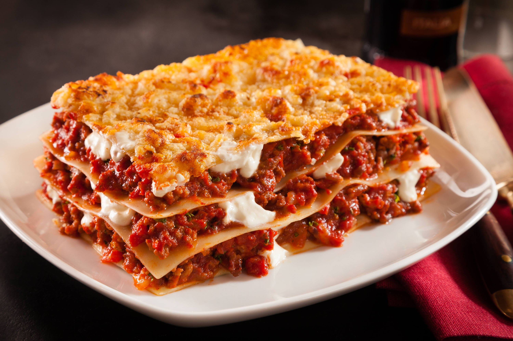

Lasaña

Lasagna, also known as lasagne, is a type of pasta, possibly one of the oldest types, made in very wide, flat sheets. In Italian cuisine it is made of stacked layers of pasta alternating with fillings such as ragù, béchamel sauce, vegetables, cheeses, and seasonings and spices.
Ingredientes
- 1 paquete de láminas de lasaña
- 1 zanahoria
- 500 gram de carne molida de res
- 200 gram de queso parmesano rallado
- 200 gram de queso manchego rallado
- 200 gram de queso ricotta rallado
- ½ cebolla finamente picada
- 2 dientes de ajo finamente picados
- 1 raja de apio finamente picado
- 4 jitomates sin semillas y en cubos
- 2 tazas de puré de tomate
- 1 taza de caldo de res
- 2 hojas de laurel
- ¼ taza de aceite de oliva
- Sal y pimienta al gusto
Steps
- Precalienta el horno a 180° C.
- Aparte, acitrona la cebolla y el ajo.Agrega el apio y la zanahoria y cocina por 5 minutos.
- Añade la carne y salpimienta. Cocina por 5 minutos y agrega el jitomate y cocina hasta que suelte jugo. Agrega el puré, las hojas de laurel y el caldo de res.
- Rectifica la sazón de la carne.
- Tapa y cocina hasta que la carne y las verduras estén cocidas. Cuece las láminas de lasagna en agua hirviendo con sal por 5 minutos y escurre con un poco de aceite y reserva.
- Vierte un poco de boloñesa al fondo del recipiente, acomoda las láminas de lasaña, la carne y los quesos. Forma capas hasta terminar con la pasta.
- Espolvorea queso y hornea por 30 minutos.
- Sirve y decora con el perejil.